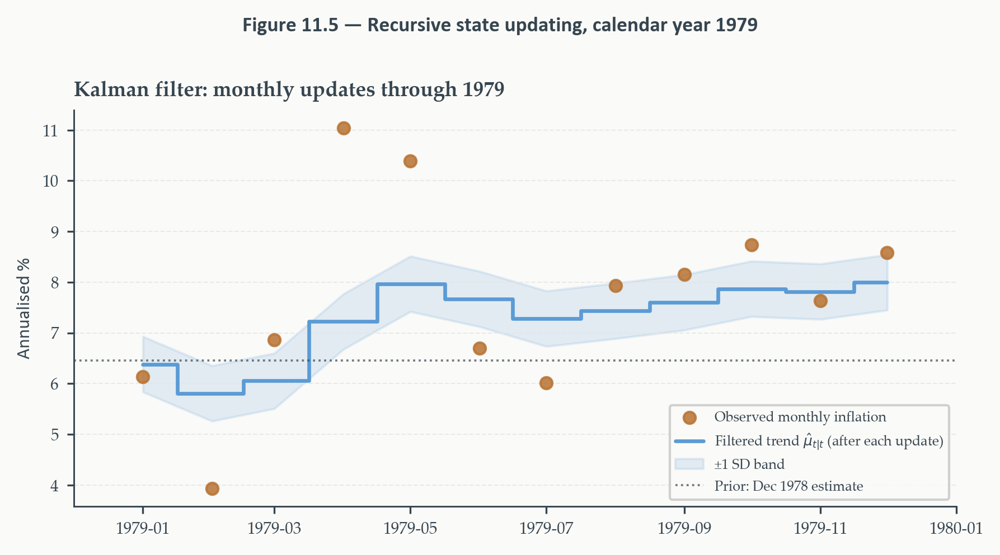

State Space Models and the Kalman Filter
Chapter 11
2026-08-27
The Question That Closes the Course
Chapter 9 ended by asking: what if the parameters of a volatility model aren’t fixed — what if they drift? This chapter’s answer turns out to unify almost everything built across the entire course.
- Every model since Chapter 1 estimated its parameters once and applied them uniformly
- The state space framework relaxes that assumption in the most general way available
- The “state” of the world — trend inflation, a time-varying coefficient, an unobserved component — is a latent variable evolving on its own, observed only through a noisy signal
The Kalman filter recovers the best estimate of that hidden state from noisy observations, updating in real time as new data arrive. By the end of this chapter, ARIMA, exponential smoothing, and GARCH itself will all turn out to be special cases of one architecture.
Why This Chapter Matters
One framework, one algorithm, one capstone application:
- The local level model — the simplest genuine state space model, doing most of the pedagogical work
- The Kalman filter — derived from scratch, in scalar form, with a full numerical example
- The general matrix form — revealing ARMA, exponential smoothing, and TVP regression as special cases of one structure
- Nowcasting — the capstone application, extracting a real-time GDP estimate from monthly indicators before the quarterly release ever arrives
Running example: monthly core PCE inflation, 1960–2019 — a series whose journey through the Great Inflation, the Volcker disinflation, and the Great Moderation makes the idea of a slowly drifting, unobserved trend immediately concrete.
Today’s Roadmap
- The state space idea
- The local level model
- The Kalman filter
- Initialization, signal-to-noise, and estimation
- Filtered vs. smoothed, and forecasting
- The general state space form and special cases
- Nowcasting
The State Space Idea
Section 1
A Recursion You Already Know
Chapter 9’s GARCH(1,1) is powerful but feels mysterious — why does it work? What principle is it actually implementing?
\[ \sigma_t^2 = \omega+\alpha\varepsilon_{t-1}^2+\beta\sigma_{t-1}^2 \]
Look at what each object actually is: \(\sigma_t^2\) is never observed — it’s inferred. \(\varepsilon_{t-1}^2\) is observed, but it’s a noisy proxy for \(\sigma_{t-1}^2\) — even knowing the true variance exactly, the realized squared return would still deviate from it.
The GARCH recursion predicts today’s hidden variance using yesterday’s hidden variance, corrected by yesterday’s noisy signal. That is exactly the structure this entire chapter formalizes.
Making the Signal-Noise Structure Precise
\[ \varepsilon_t^2 = \sigma_t^2\cdot z_t^2, \qquad z_t\sim\text{i.i.d.}(0,1) \]
Taking expectations: \(\mathbb{E}[\varepsilon_t^2\mid\mathcal{F}_{t-1}]=\sigma_t^2\).
State variable. An unobserved quantity summarizing all past-relevant information about the system at time \(t\) — here, \(\sigma_t^2\).
Observation. A measured quantity depending on the current state plus noise — here, \(\varepsilon_t^2=\sigma_t^2z_t^2\).
\(\varepsilon_t^2\) is an unbiased but noisy observation of the latent variance — with multiplicative noise \(z_t^2\), mean one. Equation (10.1) isn’t just a variance model; it’s an algorithm for extracting a signal from a noisy measurement.
The Two-Equation Structure, Generalized
\[ y_t = f(\alpha_t)+\text{observation noise} \qquad\qquad \alpha_t=g(\alpha_{t-1})+\text{state noise} \]
The observation equation links what’s measured to the underlying state. The state equation governs how the unobserved state itself evolves. Every state space model in this chapter is built from exactly these two pieces.
For GARCH specifically: the observation equation is \(\varepsilon_t^2=\sigma_t^2z_t^2\); the state equation is the GARCH recursion itself — with no separate additive noise term on the state side.
What GARCH Cannot Do
GARCH is a state space model with two real restrictions. What are they, and what do they cost?
First: the state equation is deterministic — \(\sigma_t^2\) is a fixed function of past data, no random shock of its own. Second: the parameters \(\omega,\alpha,\beta\) are constants — the volatility mechanism operates identically in every period, the 1970s exactly like the Great Moderation.
Adding genuine state noise is the entire generalization this chapter makes. When the state can move randomly — not just as a fixed function of the past — the model lets the underlying structure itself evolve, and the Kalman filter estimates both the current state and its uncertainty. GARCH is a state space model without state noise. The local level model, next, is the simplest example of what happens once that noise is added back in.
The Prediction-Correction Principle
Both the GARCH filter and the Kalman filter implement the same two-step logic, every period. Predict: use the state equation to project the hidden state one period forward, with its uncertainty. Correct: observe new data, compute how far it deviates from the prediction, update by weighting prediction against signal.
The weight given to new information depends on relative noise: very noisy observations \(\to\) trust the prediction, update little. Precise observations relative to prior uncertainty \(\to\) update aggressively.
GARCH’s gain parameter \(\alpha\) is a fixed version of this weight. The Kalman gain, derived in Section 3, is the time-varying, optimal version — computed fresh at every step from the actual state of uncertainty, not fixed once and applied forever.
A First Glimpse: Tracking Inflation in Real Time
Early 1975. The Fed is trying to assess underlying inflation after the first oil shock. Each new monthly reading is noisy — a single data point tells you little on its own. How should a sequence of such readings update a running estimate of the true underlying trend?
This is the concrete question the rest of the chapter answers precisely. Not “what is inflation today” — that’s directly observed, if noisily — but “what is the underlying trend generating these noisy monthly readings, and how confident should we be in our current estimate of it?” Section 2 builds the minimal model that captures exactly this.
The Local Level Model
Section 2
The Minimal State Space Model
Trend inflation drifts over time, not fully predictably. What we actually observe is that drifting level plus measurement noise. What’s the simplest formal structure capturing exactly this?
The local level model.
\[ y_t = \mu_t+\varepsilon_t, \qquad \varepsilon_t\sim\text{i.i.d.}(0,\sigma_\varepsilon^2) \]
\[ \mu_t = \mu_{t-1}+\eta_t, \qquad \eta_t\sim\text{i.i.d.}(0,\sigma_\eta^2) \]
\(\varepsilon_t,\eta_t\) independent of each other and of all past values.
Observation equation: observed inflation equals the latent trend plus measurement noise. State equation: the trend itself evolves as a random walk, drifting by a shock \(\eta_t\) each period.
Sanity Check 1: The Stationary-Mean Boundary
Set \(\sigma_\eta^2=0\) — no state noise at all. What model does the local level model collapse to?
The trend stops moving entirely: \(\mu_t=\mu\), a fixed constant. The model reduces to \(y_t=\mu+\varepsilon_t\) — a plain constant-mean-plus-noise model, exactly what every chapter before this one implicitly assumed when treating a series’ mean as fixed.
Sanity Check 2: The Random Walk Boundary
Now the opposite extreme: \(\sigma_\varepsilon^2=0\) — no observation noise at all. What happens?
\(y_t=\mu_t\) exactly, and the state equation says \(y_t=y_{t-1}+\eta_t\) — a pure random walk. Exactly Chapter 4’s canonical \(I(1)\) process. The local level model nests both boundary cases — the fixed-mean model and the pure random walk — as special cases of one general structure.
Sanity Check 3: Exponential Smoothing, Rigorously Derived
Chapter 2 introduced exponential smoothing as a useful heuristic: \(\hat\mu_t=(1-\lambda)\hat\mu_{t-1}+\lambda y_t\), with \(\lambda\) chosen by cross-validation. Is there a principled reason this particular update rule works?
This rule is exactly the Kalman filter applied to the local level model, once the filter has converged to its steady state. \(\lambda\) is not an arbitrary tuning knob — it’s the steady-state Kalman gain, determined by the signal-to-noise ratio \(q=\sigma_\eta^2/\sigma_\varepsilon^2\). The state space framework gives Chapter 2’s heuristic a rigorous derivation and a genuine statistical interpretation, developed fully in Section 4.
A Genuine Subtlety: Random Walk \(\neq\) Simple Nonstationarity
The state equation \(\mu_t=\mu_{t-1}+\eta_t\) looks like a unit root process. Is the observed series \(y_t\) simply \(I(1)\)?
No — \(y_t=\mu_t+\varepsilon_t\) is the sum of an \(I(1)\) component and an \(I(0)\) component, which makes it an ARIMA(0,1,1) process specifically, not a pure random walk. Not a contradiction — the local level model imposes structure on how the unit root enters the data, structure a bare unit-root test can’t see.
ADF and KPSS applied to \(y_t\) will typically fail to reject a unit root — consistent with the model, but uninformative about the deeper question. The local level decomposition tells us something Chapter 4’s tools cannot: how much of the apparent nonstationarity is permanent trend drift versus transitory observation noise. That decomposition is the entire value this chapter adds.
What We Actually Need to Estimate
Two unknown parameters: \(\sigma_\varepsilon^2\) and \(\sigma_\eta^2\).
The likelihood has no simple closed form. The latent states \(\mu_1,\ldots,\mu_T\) are unobserved and must be integrated out — genuinely more involved than an ordinary regression likelihood.
The Kalman filter solves this as a byproduct of state estimation itself. Running the filter forward through the data produces prediction errors — innovations — evaluable at any candidate parameter values. Maximizing the resulting likelihood over \((\sigma_\varepsilon^2,\sigma_\eta^2)\) gives MLE. Section 4 returns to this after the filter itself is built.
The Kalman Filter
Section 3
The Inference Problem, Precisely
Given observations \(y_1,\ldots,y_t\), what’s the best estimate of the current state \(\mu_t\)? “Best” means minimum mean squared error.
Four objects, precise notation. \(\hat\mu_{t|t-1}\): predicted state — best estimate of \(\mu_t\) using data only through \(t-1\), before seeing \(y_t\). \(\hat\mu_{t|t}\): filtered state — best estimate after incorporating \(y_t\). \(P_{t|t-1}\), \(P_{t|t}\): the corresponding mean squared errors.
The Kalman filter computes all four, period by period, starting from an initial condition and updating as observations arrive.
Step 1: Prediction
The state equation says \(\mu_t=\mu_{t-1}+\eta_t\), \(\eta_t\sim(0,\sigma_\eta^2)\). Taking expectations:
\[ \hat\mu_{t|t-1} = \hat\mu_{t-1|t-1}, \qquad P_{t|t-1}=P_{t-1|t-1}+\sigma_\eta^2 \]
Best prediction of today’s trend is where it was yesterday — \(\eta_t\) has mean zero and isn’t yet observable. Uncertainty grows by exactly \(\sigma_\eta^2\): only the state noise appears here, since observation noise hasn’t entered yet — we’re projecting forward using only the state equation.
Step 2: Update
\(y_t\) arrives. The innovation — the surprise — is \(v_t=y_t-\hat\mu_{t|t-1}\). Its variance combines both noise sources:
\[ F_t = P_{t|t-1}+\sigma_\varepsilon^2 \]
\[ K_t = \frac{P_{t|t-1}}{F_t} = \frac{P_{t|t-1}}{P_{t|t-1}+\sigma_\varepsilon^2} \]
The Kalman gain \(K_t\in(0,1)\): how much weight the new observation gets relative to the prior.
\[ \hat\mu_{t|t} = \hat\mu_{t|t-1}+K_t v_t, \qquad P_{t|t}=(1-K_t)P_{t|t-1} \]
The filtered estimate is the prediction plus a fraction \(K_t\) of the surprise. Incorporating any observation, however noisy, always reduces uncertainty: \(P_{t|t}<P_{t|t-1}\) whenever \(K_t>0\).
Reading the Kalman Gain
Two informative extremes. \(\sigma_\varepsilon^2\to\infty\) (observations are pure noise): \(K_t\to0\) — ignore the new data entirely, keep the prior. \(\sigma_\varepsilon^2\to0\) (observations are perfect): \(K_t\to1\) — set \(\hat\mu_{t|t}=y_t\), trust the observation completely.
\(K_t=P_{t|t-1}/(P_{t|t-1}+\sigma_\varepsilon^2)\): the ratio of prediction uncertainty to total uncertainty. Its value encodes a precise, quantitative answer to “how much should this single new data point revise my beliefs?”
A Numerical Example: January 1975
\(\sigma_\varepsilon^2=4.0\), \(\sigma_\eta^2=0.5\). December 1974: \(\hat\mu_{t-1|t-1}=7.5\), \(P_{t-1|t-1}=1.44\) (std. dev. 1.2). January observation: \(y_t=11.4\).
Predict: \(\hat\mu_{t|t-1}=7.5\), \(\;P_{t|t-1}=1.44+0.5=1.94\)
Innovation: \(v_t=11.4-7.5=3.9\) — a large surprise
Gain: \(F_t=1.94+4.0=5.94\), \(\;K_t=1.94/5.94\approx0.327\)
The filter assigns roughly one-third weight to the new observation, two-thirds to the prior — appropriately skeptical, since \(\sigma_\varepsilon^2=4.0\) is large relative to \(P_{t|t-1}=1.94\).
Completing the Update
\[ \hat\mu_{t|t} = 7.5+0.327(3.9) = 7.5+1.28 = 8.78, \qquad P_{t|t}=(1-0.327)(1.94)=1.31 \]
Trend inflation revised upward from 7.5% to 8.78% — meaningful, but well short of the noisy 11.4% reading. Uncertainty falls from \(\sqrt{1.94}\approx1.39\) to \(\sqrt{1.31}\approx1.14\): even a noisy observation reduced our uncertainty. In February, \(\hat\mu_{t|t}=8.78\) and \(P_{t|t}=1.31\) become the new prior — the recursion repeats, period after period.
Watching Twelve Consecutive Updates

December 1978 prior: ~6.5%. January produces only a modest revision; February’s reading falls sharply, pulling the estimate briefly down. From March onward, observations run consistently above the predicted trend — each update pushes the estimate higher. By December: ~8%, a cumulative 1.5pp revision. The ±1 SD band narrows across the year as twelve observations progressively reduce uncertainty.
No single observation is decisive — the weight of consistent evidence gradually overrides the prior. This is the prediction-correction logic in motion, not just algebra on a single slide.
What Makes This Optimal, Not Just Plausible
Under Gaussian innovations, the Kalman filter is the exact conditional expectation: \(\hat\mu_{t|t}=\mathbb{E}[\mu_t\mid y_1,\ldots,y_t]\) — not merely a reasonable updating heuristic, the genuinely optimal one. With non-Gaussian innovations, it remains the best linear estimator — the linear minimum variance result.
Correct parameter values matter — not a technical formality. Everything above assumed known \(\sigma_\varepsilon^2,\sigma_\eta^2\). A misspecified signal-to-noise ratio produces a suboptimal gain: the filter either over-reacts to noise or under-reacts to genuine state changes. Section 4 addresses how these parameters get estimated from data in the first place.
Initialization, Signal-to-Noise, and Estimation
Section 4
Where Does the Filter Start?
The recursion is forward-only — each period’s filtered estimate feeds the next period’s prediction. Before period 1, there’s no previous period. What starts the machine?
Diffuse prior. Set \(P_{0|0}=\kappa\) for a very large constant (effectively infinite) — no prior information about the initial level. The first-period Kalman gain is then approximately 1; filtered variance falls rapidly over the first handful of periods as evidence accumulates.
Why not a stationary initialization instead? Unavailable here — \(\mu_t=\mu_{t-1}+\eta_t\) is a random walk with no unconditional mean to initialize from. The diffuse prior is the standard choice for the local level model specifically, and statsmodels’ default.
After roughly 5-10 periods, the initial condition has essentially no influence — the filter has “forgotten” where it started. Burn the first few observations for short series where this convergence window matters proportionally more.
The Single Number That Governs Everything
Every behavior of the local level model — how fast it updates, how smooth its trend looks — traces back to one dimensionless ratio. What is it?
Signal-to-noise ratio. \(q=\sigma_\eta^2/\sigma_\varepsilon^2\) — how much the hidden state moves each period, relative to how noisy each observation is.
\(q\) small (e.g. 0.01): trend barely moves, observations comparatively noisy — filter should barely react, the prior is more reliable than any single reading. \(q\) large (e.g. 1.0): trend is volatile, observations relatively precise — filter should follow the data closely.
The Steady-State Kalman Gain
As \(t\to\infty\), the prediction variance \(P_{t|t-1}\) converges to a fixed \(\bar P\). Imposing \(P_{t|t-1}=P_{t-1|t-1}\equiv\bar P\) in the two-step recursion and solving the resulting quadratic:
\[ \bar K = \frac{-q+\sqrt{q^2+4q}}{2} \]
A balance condition, made geometric. \(\bar P\) grows by \(\sigma_\eta^2\) each period as the trend drifts; it shrinks by fraction \(\bar K\) each period when a new observation updates it. Steady state is exactly the gain where these two forces cancel. \(\bar K\) is increasing in \(q\), exactly as the intuition requires — large \(q\) needs a larger gain to keep up with faster drift.
The Exponential Smoothing Connection, Completed
In steady state, the Kalman update collapses to:
\[ \hat\mu_{t|t} = (1-\bar K)\hat\mu_{t-1|t-1}+\bar K\,y_t \]
Exactly Chapter 2’s exponential smoothing recursion, with \(\lambda=\bar K\). Chapter 2’s heuristic — “choose \(\lambda\) by cross-validation” — now has a structural interpretation: the optimal \(\lambda\) is the steady-state Kalman gain, determined entirely by the signal-to-noise ratio. Estimating \(q\) by MLE and computing \(\bar K\) gives the identical answer to optimizing \(\lambda\) directly — with the added benefit of a genuine confidence interval on \(q\) itself.
Maximum Likelihood via the Prediction Error Decomposition
At each \(t\), the filter computes the innovation \(v_t\) and its variance \(F_t=P_{t|t-1}+\sigma_\varepsilon^2\). Under Gaussian assumptions: \(v_t\mid y_1,\ldots,y_{t-1}\sim N(0,F_t)\).
\[ \log\mathcal{L}(\sigma_\varepsilon^2,\sigma_\eta^2) = -\frac{T}{2}\log(2\pi)-\frac{1}{2}\sum_{t=1}^T\left[\log F_t+\frac{v_t^2}{F_t}\right] \]
Serially uncorrelated innovations let the joint likelihood factor into a product of univariate Gaussians — the prediction error decomposition. This is exactly the form of the GARCH log-likelihood from Chapter 9, with \(F_t\) playing the role of \(\sigma_t^2\) and \(v_t\) playing the role of \(\varepsilon_t\). Same underlying trick, different filter producing the ingredients.
Applied: Fitting the Local Level Model to Core PCE Inflation
\(\hat\sigma_\varepsilon^2=1.27\), \(\hat\sigma_\eta^2=0.09\) — signal-to-noise \(\hat q=0.072\), steady-state gain \(\bar K=0.235\). Both parameters estimated precisely, standard errors an order of magnitude smaller than the point estimates. The low signal-to-noise ratio tells an economically coherent story: month-to-month noise in the PCE index is large relative to genuine drift in the underlying trend.
In steady state, the filter assigns roughly 23% weight to each new monthly observation, 77% to the prior trend estimate. Equivalently: the local level model implies an optimal exponential smoother with \(\lambda=0.235\) — updating meaningfully, but never chasing a single month’s fluctuation.
Filtered vs. Smoothed, and Forecasting
Section 5
Three Genuinely Different Questions
“What’s the best estimate of the state at \(t\)” has more than one honest answer, depending on what information is allowed to inform it.
Filtered estimate \(\hat\mu_{t|t}\): uses only \(\{y_1,\ldots,y_t\}\) — real-time, causal.
Smoothed estimate \(\hat\mu_{t|T}\): uses the entire sample — a backward pass after the forward filter completes (the Kalman/Rauch-Tung-Striebel smoother).
Forecast \(\hat\mu_{T+h|T}\): projects \(h\) steps beyond the sample.
All three come out of statsmodels after fitting the same model — choosing the right one for the task at hand is the analyst’s job, not the software’s.
Why the Filter Lags at Turning Points
If inflation shifts permanently upward, will the filtered estimate notice immediately?
No — and that lag is a feature, not a bug, for real-time analysis. The filtered estimate can’t see the future; it takes a few periods of accumulating evidence before the Kalman gain fully revises the trend upward. A policy rule responding to the filtered estimate uses no information unavailable at the time — an honest real-time assessment, lag included.
The smoothed estimate is always at least as precise: \(P_{t|T}\leq P_{t|t}\) for every \(t\). Future observations genuinely inform where the trend must have been — incorporating them can only reduce uncertainty, never increase it. The improvement is largest mid-sample; near the end, filtered and smoothed converge, since there’s little future data left to draw on.
Choosing the Right One Matters for the Question Being Asked
“Should the Fed have tightened sooner in the 1970s?” Which estimate answers this honestly?
The filtered estimate — what the Fed could actually have known at the time. The smoothed estimate incorporates the Volcker disinflation as retrospective evidence that inflation had truly shifted — information genuinely unavailable in real time. Using the smoothed trend to judge a real-time policy decision is exactly Chapter 5’s look-ahead bias, one more time, in a new setting.
Applied: Filtered and Smoothed Trend Inflation

Copper: raw monthly inflation. Sky blue: filtered \(\hat\mu_{t|t}\), real-time, with its ±1 SD band. Sage: smoothed \(\hat\mu_{t|T}\), full-sample retrospective. The smoother traces a cleaner picture of all three historical regimes; the filter visibly lags at each turning point — precisely the real-time cost of not seeing the future.
An Honest Diagnostic Result
Does this simple model actually pass its own residual checks?
Ljung-Box rejects at both horizons: \(Q(12)=21.14\) (\(p=0.048\)), \(Q(24)=37.91\) (\(p=0.035\)) — statistically detectable residual autocorrelation remains. No single dominant lag; a diffuse pattern of small positive autocorrelations, not a clean AR(1) structure.
The likely cause: the pure random-walk trend has no momentum of its own. A local linear trend model — adding a stochastic slope to the state vector — gives the filter an extra degree of freedom to track more persistent regime changes, and eliminates the rejection on this data. The simpler model still tells the correct qualitative story here; the rejection is a genuine reminder that model adequacy is always provisional, exactly Chapter 3’s diagnostic discipline, applied one more time.
Forecast Uncertainty Grows With Horizon
\[ P_{T+h|T} = P_{T|T}+h\cdot\sigma_\eta^2 \]
Two sources of uncertainty, additive. \(P_{T|T}\): where the trend sits at sample’s end. \(h\cdot\sigma_\eta^2\): additional uncertainty accumulating as the trend keeps drifting for \(h\) more periods. Intervals widen linearly — like a random walk’s fan chart — rather than saturating, as a stationary ARIMA forecast (Chapter 3) would. Economically correct: there’s no reason trend inflation should revert to a fixed mean, so long-horizon uncertainty genuinely has no ceiling.
Applied: The Fan Chart Forecast

Point forecast: 1.62% — the filtered trend at December 2019, reflecting a reading that core inflation had settled just below 2% by the end of the pre-COVID sample. The forecast line stays flat — the random-walk state has no mean reversion, so the best guess at any horizon is simply the current level. The 90% interval spans roughly ±0.9pp at 12 months, widening to ±1.2pp at 24 — honest intervals for a genuinely drifting, unobserved trend, not the artificially narrow ones a fixed-trend assumption would produce.
Never Report Smoothed States as Real-Time
A common, genuinely costly mistake: fit over the full sample, extract smoothed states, present them as “what the model would have produced in real time.” Incorrect — the smoother uses future data, so it is not a real-time estimator by construction. For any application where timing matters — policy evaluation, trading signals, live forecasting — report filtered states. Reserve the smoother for historical decompositions where the full sample is legitimately in scope.
The General State Space Form and Special Cases
Section 6
The General Linear State Space Model
Everything so far applied to one specific, simple model. The same machinery extends, unmodified, to a vastly broader class.
\[ \mathbf{y}_t = \mathbf{Z}_t\boldsymbol\alpha_t+\mathbf{d}_t+\boldsymbol\varepsilon_t, \qquad \boldsymbol\varepsilon_t\sim N(\mathbf{0},\mathbf{H}_t) \]
\[ \boldsymbol\alpha_t = \mathbf{T}_t\boldsymbol\alpha_{t-1}+\mathbf{c}_t+\mathbf{R}_t\boldsymbol\eta_t, \qquad \boldsymbol\eta_t\sim N(\mathbf{0},\mathbf{Q}_t) \]
\(\mathbf{Z}\): observation matrix — maps the state to what’s observable. \(\mathbf{T}\): transition matrix — governs state evolution; its eigenvalues determine stationary/unit-root/explosive, exactly Chapter 1’s companion-matrix logic. \(\mathbf{R}\): selection matrix — which state elements get shocked. \(\mathbf{H}\): observation noise covariance. \(\mathbf{Q}\): state noise covariance.
What the Offset Vectors Actually Do
\(\mathbf{d}_t\), \(\mathbf{c}_t\) look like bookkeeping. What do they mean economically?
\(\mathbf{d}_t\): an intercept in the observation equation — shifts the observed series without touching state dynamics. \(\mathbf{c}_t\): an intercept in the state equation — introduces deterministic drift into the state itself.
Concretely, for core PCE inflation averaging 3%. Without an offset, the model must explain that entire non-zero mean through the initial state estimate. Setting \(d=3.0\) centers the series before it enters the filter, so \(\mu_t\) tracks deviations from 3%. Setting \(c=0.05\) per month introduces a genuine linear trend on top of the stochastic drift — the state space representation of a time trend in the mean. In most applications: demean first, set both offsets to zero.
The Local Level Model, Recognized as a Special Case
\[ p=m=1: \qquad Z=1,\quad T=1,\quad R=1,\quad H=\sigma_\varepsilon^2,\quad Q=\sigma_\eta^2 \]
Scalar state, unit loading, both noise variances free. Everything from Sections 2-5 is exactly this parameterization of the general form — no new machinery, just the simplest possible instance of it.
ARMA(\(p\),\(q\)) as a Special Case
The companion-matrix representation from Chapter 3, reread. Stack current and lagged \(y_t\) into the state vector; \(\mathbf{T}\) is exactly the companion matrix from Chapter 1, top row carrying the AR coefficients; \(\mathbf{Z}\) picks off the first element; \(H=0\), since the observed series has no separate measurement error beyond the model’s own innovations.
The Kalman filter applied here recovers exactly the linear projections Chapter 3 computed directly. State space form adds nothing new for pure ARMA — it places ARMA on the same footing as models with genuinely latent states.
Exponential Smoothing and TVP Regression, Both Recognized
Simple exponential smoothing (Chapter 2) is the local level model with \(Q=0\) — no state noise — evaluated at the steady-state gain. \(\lambda=\bar K\), exactly Section 4’s result. Exponential smoothing is a degenerate local level model: the trend is non-stochastic, and \(\sigma_\varepsilon^2\) is the only free parameter.
Time-varying parameter (TVP) regression. \(y_t=\beta_tx_t+\varepsilon_t\), with \(\beta_t=\beta_{t-1}+\eta_t\) — the slope itself is a random walk. The Kalman filter estimates a coefficient path, not a fixed number. The natural tool for asking whether the Phillips curve slope, or a monetary transmission coefficient, has genuinely drifted over decades.
A time-varying \(\mathbf{Z}_t=x_t\) requires care. The likelihood and recursion remain valid, but the interpretation shifts — the state is no longer a pure latent variable, it’s a coefficient estimated from data entering both the observation matrix and the dependent variable simultaneously.
What the General Form Actually Buys
Three concrete payoffs, not just theoretical tidiness:
One estimation routine for everything. Kalman filter plus prediction-error MLE estimates all of these — statsmodels’ MLEModel base class, from which UnobservedComponents, SARIMAX, and DynamicFactor all inherit. Fitting an ARIMA vs. a local level model isn’t a different algorithm — only different system matrices, same underlying filter.
Unobserved components become genuinely estimated, not assumed. Chapter 2’s trend/cycle/seasonal decomposition gets formalized: each component is its own state equation with its own noise variance, and the Kalman smoother extracts each one directly from the data — not imposed by construction.
The natural language for mixed-frequency data. Missing observations are just periods where \(y_t\) isn’t observed — the filter skips the update, runs only the prediction step. No special treatment required. Section 7’s entire nowcasting application rests on exactly this property.
Nowcasting
Section 7
The Real-Time Problem
Real GDP is published quarterly; the first estimate arrives four to six weeks after the quarter ends. A finance ministry assessing the economy in October has, at best, second-quarter GDP — already four months stale. Monthly indicators arrive far sooner. How should they be combined?
Nowcasting. Estimating the current value of a variable observed only with a lag or at low frequency, using higher-frequency indicators observed sooner.
This is a signal-extraction problem, precisely. GDP growth is the latent state; monthly indicators are noisy observations of it. The Kalman filter is the natural tool — exactly the machinery this entire chapter has built.
The Mixed-Frequency Problem
Monthly indicators arrive twelve times a year; GDP arrives four. The two clocks don’t align. How does the filter handle a variable that’s simply absent most months?
Natively, through missing-observation logic. Run the filter at the monthly frequency — the higher clock. Months 1 and 2 of each quarter: only monthly indicators observed, GDP’s row treated as missing, its update step skipped. Month 3: the quarterly release arrives, full update using everything. The prediction step runs every month regardless, projecting forward and accumulating uncertainty between releases.
One More Complication: Temporal Aggregation
Quarterly GDP growth isn’t the monthly state at one instant — it’s the accumulation of activity over three months. How does the model link a genuinely monthly state to a genuinely quarterly observation?
Mariano and Murasawa (2003). Quarterly GDP growth is approximately the sum of three monthly growth rates:
\[ y_t^{(GDP)} \approx \frac{1}{3}(\alpha_t+\alpha_{t-1}+\alpha_{t-2})+\varepsilon_t^{(GDP)} \]
In practice, the filter carries a 5-dimensional state \((\alpha_t,\alpha_{t-1},\ldots,\alpha_{t-4})'\) — even though the underlying activity factor is one-dimensional — purely so the quarterly observation can be expressed as a linear combination of state elements. \(\mathbf{T}\) shifts the lags forward each period exactly like an AR companion matrix. No new machinery beyond Section 3’s recursion, applied to a larger system.
The Model
Three FRED series: GDPC1 (quarterly, month 3 only), INDPRO and UNRATE (both monthly, every month). The latent state \(\alpha_t\): a monthly economic activity factor both monthly indicators load onto.
One identification constraint is required. The factor loading and the state variance aren’t separately identified without normalization — any rescaling of the factor can be offset by rescaling the loadings. Fix \(\sigma_\eta^2=1\): the factor has unit-variance innovations, loadings become interpretable as each indicator’s standard-deviation response to a one-unit factor shock. Five free parameters, not six.
Implemented as a custom statsmodels.tsa.statespace.MLEModel subclass — genuinely more advanced than UnobservedComponents, but running on exactly the same underlying filter.
Applied: Nowcasting GDP Growth

Top: the monthly nowcast tracks GDP growth’s broad contours and deteriorates ahead of each NBER recession — weakening industrial production and rising unemployment feed through before the quarterly release confirms the slowdown. Bottom: the extracted activity factor, behaving much like a coincident business-cycle indicator, dipping sharply into negative territory ahead of every recession across six decades and recovering promptly during expansions.
The estimated loadings carry the right signs: \(\hat\lambda_{IP}>0\) (stronger industrial production signals higher activity), \(\hat\lambda_{UR}<0\) (rising unemployment signals weaker activity) — the model recovered economically sensible structure from data alone, no signs imposed.
What This Small Model Cannot Do — Honestly
The tracking is imperfect — particularly the volatile early-1980s Volcker-era swings, where the model lags. Deliberately small: two monthly indicators and one quarterly target illustrate the mixed-frequency mechanics; an operational system uses many more series. The NY Fed’s Weekly Economic Index and the Giannone-Reichlin-Small (2008) model — the academic foundation of most central bank nowcasting systems — use dozens of monthly indicators, all linked through the identical temporal-aggregation equation.
None of those extensions requires new principles. Larger \(\mathbf{Z}\) and \(\mathbf{T}\) matrices, more free parameters, more sophisticated initialization — but the same prediction-correction recursion, the same prediction-error likelihood, the same missing-observation logic that drives the two-indicator model above. The Kalman filter scales from Section 2’s single-parameter local level model to the most complex macroeconomic forecasting systems currently in operational use.
Recap
We closed the course by generalizing everything in it. Chapter 9’s GARCH recursion, reread carefully, was already a state equation in disguise — the pivot that motivated treating “unobserved state, noisy observation” as the organizing idea rather than a special trick. The local level model gave that idea its simplest concrete form, nesting the fixed-mean model and the pure random walk as boundary cases, and giving Chapter 2’s exponential smoothing heuristic a genuine statistical derivation. The Kalman filter formalized prediction and correction into an exact, optimal recursion — derived by hand, on real numbers, watched updating through a full year of real inflation data. Filtered and smoothed estimates turned out to answer genuinely different questions, each with its own honest use. And the general matrix form revealed that ARMA, exponential smoothing, and time-varying regressions were never separate tools — they were always this one architecture, dressed differently. Nowcasting closed the chapter as the capstone: extracting a real-time read on the economy before the official number ever arrives.
This is also where the course itself closes.
Looking Ahead
This is the final chapter — worth pausing to take stock of how far the toolkit has come since Chapter 1.
We began with the simplest possible question: is this series predictable from its own past? The ACF and PACF gave a visual answer; white noise tests gave a formal one. Chapter 1’s stationarity assumption — that the mean, variance, and autocovariance structure of a series stay constant over time — was the foundation everything else was built on. Chapter 4 extended that foundation to integrated processes and the machinery of ARIMA and SARIMA. Chapter 5 gave the whole enterprise operational discipline: in-sample fit versus out-of-sample accuracy, the Diebold-Mariano test, and the honest question of when added complexity actually earns its keep. Chapters 6 through 8 opened the framework to multivariate and nonstationary settings — structural breaks, vector autoregressions, cointegration — where a single series can only be understood through its relationships with others. Chapter 9 turned to the second moment: the discovery that a return’s mean may be unforecastable while its variance is not, and GARCH gave us the tools to model that time-varying uncertainty directly. Chapter 10 let entire parameter vectors switch between hidden regimes. And this chapter revealed that ARIMA, GARCH, exponential smoothing, and VAR are all special cases of one architecture — an unobserved state evolving on its own, observed only through a noisy measurement.
The road ahead is long and worth taking. Dynamic factor models and large panels, mixed-frequency VARs, time-varying parameter VARs, particle filters for nonlinear and non-Gaussian states the Kalman filter cannot handle, structural DSGE models estimated by writing their equilibrium conditions in exactly this state space form — every one of these extensions uses the prediction-correction logic built in this chapter as its foundation. These eleven chapters are not the end of the subject. They are the point where the interesting questions begin.
Key Terms
- State variable / Observation
- An unobserved quantity summarizing all past-relevant information at time \(t\); a measured quantity depending on the current state plus noise.
- Observation equation / State equation
- \(y_t=Z\alpha_t+\varepsilon_t\) linking data to the latent state; \(\alpha_t=T\alpha_{t-1}+R\eta_t\) governing the state’s own evolution.
- Local level model
- \(y_t=\mu_t+\varepsilon_t\), \(\mu_t=\mu_{t-1}+\eta_t\) — a random-walk trend plus i.i.d. observation noise, parametrized by \(\sigma_\varepsilon^2,\sigma_\eta^2\).
- Kalman filter / Innovation
- The recursive algorithm computing minimum-MSE state estimates via predict-then-update; \(v_t=y_t-\hat y_{t|t-1}\), the unpredictable, serially uncorrelated component of \(y_t\).
- Kalman gain \(K_t\)
- \(P_{t|t-1}/(P_{t|t-1}+\sigma_\varepsilon^2)\) — the weight on the current innovation; ratio of prediction to total uncertainty, between 0 (trust the prior) and 1 (trust the observation).
- Signal-to-noise ratio \(q\)
- \(\sigma_\eta^2/\sigma_\varepsilon^2\); governs the steady-state filter’s responsiveness. High \(q\): volatile, data-tracking trend. Low \(q\): smooth, slow-adapting trend.
- Prediction error decomposition
- The likelihood factored into one-period-ahead Gaussian innovation densities, each standardized by \(F_t\) — enables MLE via the filter itself.
- Filtered estimate / Smoothed estimate
- \(\hat\alpha_{t|t}\) (data through \(t\), real-time, appropriate for policy and live forecasting) vs. \(\hat\alpha_{t|T}\) (full sample, always at least as precise, appropriate only for retrospective analysis).
- Diffuse prior
- Initialization with very large \(P_{0|0}\), signaling no prior information — standard for nonstationary state equations like the local level model’s random walk.
- Structural time series model
- A state space model decomposing the series into separately specified trend, cycle, seasonal, and irregular components, each with its own state equation.
- Nowcasting / Dynamic factor model
- Real-time estimation of a low-frequency variable using higher-frequency indicators, via missing-observation filtering; a multivariate state space model in which several series share a common latent factor extracted by the Kalman filter.
ECON-5371 · Time Series Analysis and Forecasting